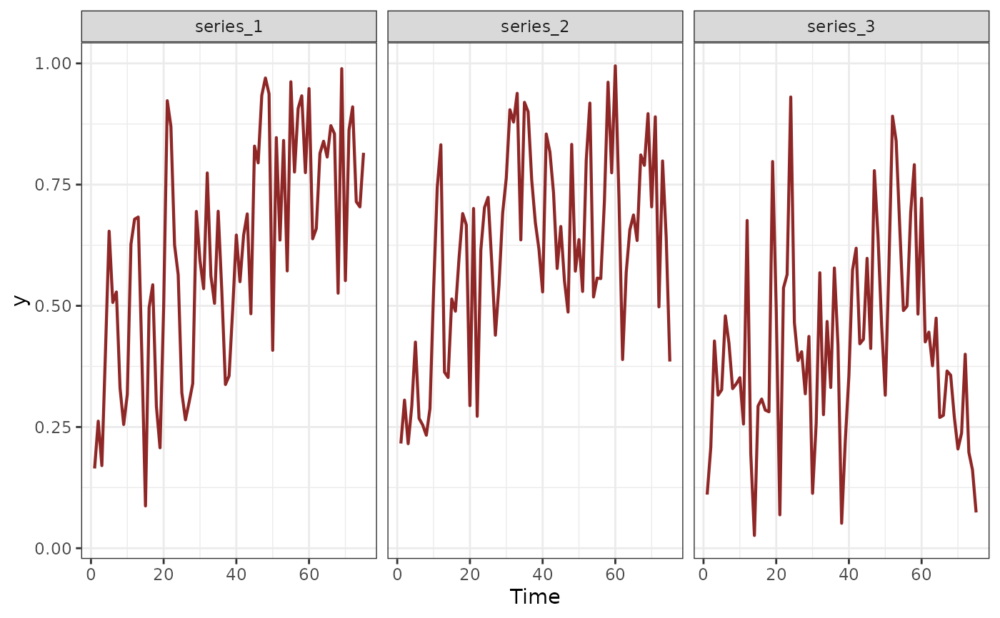
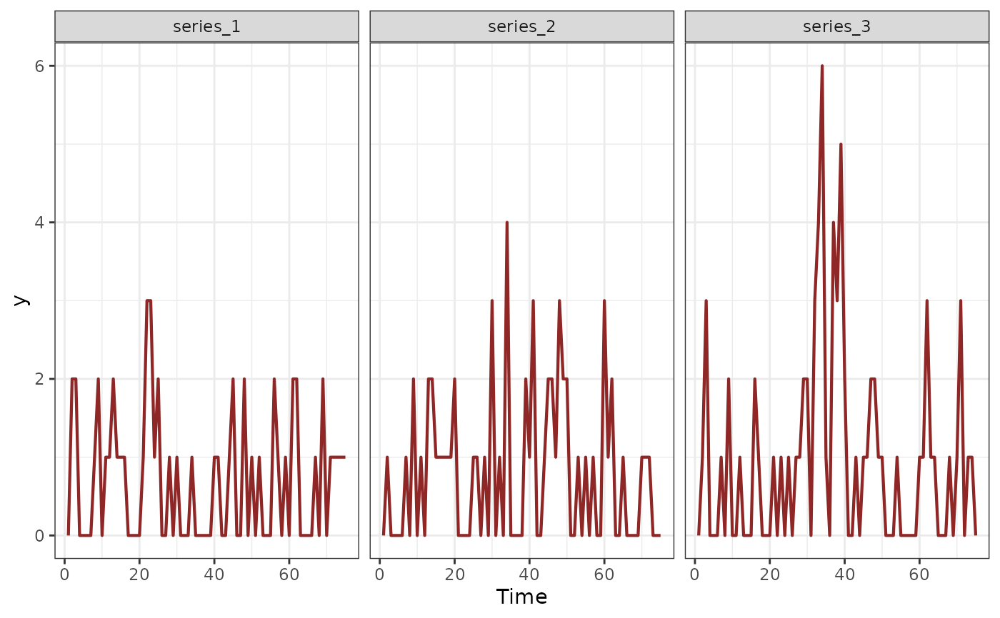

This function simulates sets of time series data for fitting a multivariate GAM that includes shared seasonality and dependence on state-space latent dynamic factors. Random dependencies among series, i.e. correlations in their long-term trends, are included in the form of correlated loadings on the latent dynamic factors
Arguments
- T
integer. Number of observations (timepoints)- n_series
integer. Number of discrete time series- seasonality
character. Eithershared, meaning that all series share the exact same seasonal pattern, orhierarchical, meaning that there is a global seasonality but each series' pattern can deviate slightly- use_lv
logical. IfTRUE, use dynamic factors to estimate series' latent trends in a reduced dimension format. IfFALSE, estimate independent latent trends for each series- n_lv
integer. Number of latent dynamic factors for generating the series' trends. Defaults to0, meaning that dynamics are estimated independently for each series- trend_model
characterspecifying the time series dynamics for the latent trend. Options are:None(no latent trend component; i.e. the GAM component is all that contributes to the linear predictor, and the observation process is the only source of error; similarly to what is estimated bygam)RW(random walk with possible drift)AR1(with possible drift)AR2(with possible drift)AR3(with possible drift)VAR1(contemporaneously uncorrelated VAR1)VAR1cor(contemporaneously correlated VAR1)GP(Gaussian Process with squared exponential kernel)
See mvgam_trends for more details
- drift
logical, simulate a drift term for each trend- prop_trend
numeric. Relative importance of the trend for each series. Should be between0and1- trend_rel
Deprecated. Use
prop_trendinstead- freq
integer. The seasonal frequency of the series- family
familyspecifying the exponential observation family for the series. Currently supported families are:nb(),poisson(),bernoulli(),tweedie(),gaussian(),betar(),lognormal(),student()andGamma()- phi
vectorof dispersion parameters for the series (i.e.sizefornb()orphiforbetar()). Iflength(phi) < n_series, the first element ofphiwill be replicatedn_seriestimes. Defaults to5fornb()andtweedie();10forbetar()- shape
vectorof shape parameters for the series (i.e.shapeforgamma()) Iflength(shape) < n_series, the first element ofshapewill be replicatedn_seriestimes. Defaults to10- sigma
vectorof scale parameters for the series (i.e.sdforgaussian()orstudent(),log(sd)forlognormal()). Iflength(sigma) < n_series, the first element ofsigmawill be replicatedn_seriestimes. Defaults to0.5forgaussian()andstudent();0.2forlognormal()- nu
vectorof degrees of freedom parameters for the series (i.e.nuforstudent()) Iflength(nu) < n_series, the first element ofnuwill be replicatedn_seriestimes. Defaults to3- mu
vectorof location parameters for the series. Iflength(mu) < n_series, the first element ofmuwill be replicatedn_seriestimes. Defaults to small random values between-0.5and0.5on the link scale- prop_missing
numericstating proportion of observations that are missing. Should be between0and0.8, inclusive- prop_train
numericstating the proportion of data to use for training. Should be between0.2and1
Value
A list object containing outputs needed for mvgam,
including 'data_train' and 'data_test', as well as some additional information
about the simulated seasonality and trend dependencies
Examples
# Simulate series with observations bounded at 0 and 1 (Beta responses)
sim_data <- sim_mvgam(family = betar(), trend_model = RW(), prop_trend = 0.6)
plot_mvgam_series(data = sim_data$data_train, series = 'all')

# Now simulate series with overdispersed discrete observations
sim_data <- sim_mvgam(family = nb(), trend_model = RW(), prop_trend = 0.6, phi = 10)
plot_mvgam_series(data = sim_data$data_train, series = 'all')
